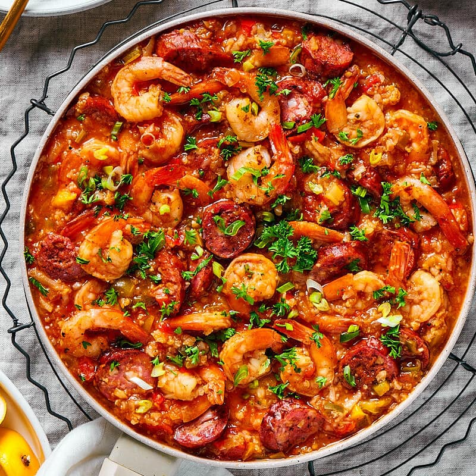

Jambalaya

Description
Jambalaya is a classic Cajun and Creole dish that is sure to please your taste buds. This one-pot meal is a hearty combination of rice, meats and vegetables, all simmered together in a rich tomato-based sauce. The dish gets its name from the French word "jambon," which means ham and in traditional Jambalaya you will find ham as one of the meats.
To make the dish, start by sauteing the meats and vegetables in a large pot or Dutch oven. Next, add in the rice, tomatoes, and spices, followed by the stock or broth. Bring the mixture to a boil, then reduce the heat and let it simmer until the rice is fully cooked and the flavors have melded together.
The meats used in jambalaya are usually chicken, andouille sausage, and shrimp. You can also add other meats like pork or beef. The vegetables used in jambalaya are the "holy trinity" of Cajun and Creole cooking, which is onions, bell peppers, amd celery. The dish is seasoned with cayenne pepper, paprika, and cajun seasoning for a kick of heat and flavor.
Serve the jambalaya with a sprinkle of green onions, and hot sauce on the side. This dish can be served as a main course or side dish. Jambalaya is a delicious, flavorful, and satisfying dish that is sure to become a staple in your recipe collection.
Ingredients
- White rice (long grain preferred)
- Meats (typically chicken, sausage and shrimp but not limited to these)
- Onions
- Bell peppers
- Celery
- Garlic
- Tomatoes (Fresh or canned)
- Cayenne pepper
- Cajun seasoning
- Paprika
- Hot sauce
- Italian seasoning
- Thyme
- Bay leaves
- Olive oil or butter
Steps
- Heat the olive oil or butter in a large pot or dutch oven over medium-high heat.
- Add the chicken chicken or pork and andouille sausage to the pot and cook until browned. Remove the meats from the pot and set aside.
- Add the onions, bell peppers, celery, and garlic to the pot and saute until the vegetables are soft.
- Add the rice to the pot and stir until the rice is well coated with the oil or butter.
- Add the diced tomatoes, chicken broth or stock, water, Cajun seasoning, paprika, cayenne pepper, Italian seasoning, thyme, bay leaves, and meats back to the pot.
- Bring the mixture to a boil, then reduce the heat to low, cover the pot and simmer for 20-25 minutes, or until the rice is fully cooked.
- Stir in the shrimp and cook for an additional 5-7 minutes, or until the shrimp is pink and cooked through.
- Remove the bay leaves and season the jambalaya with salt and pepper, to taste.
- Garnish with green onions and serve hot (with optional hot sauce).